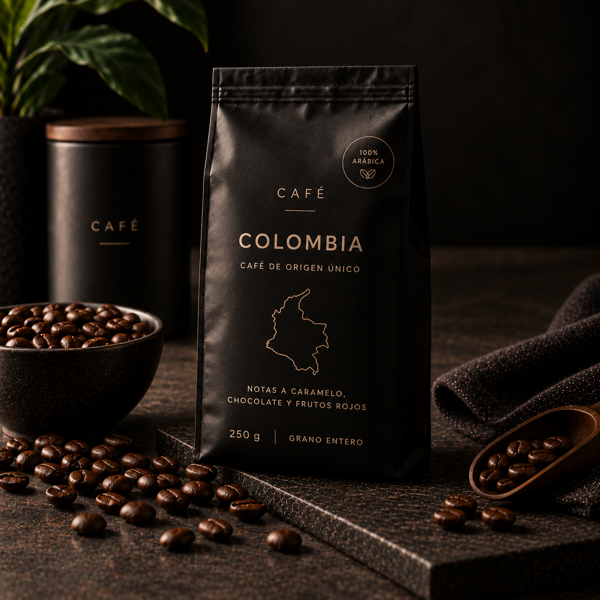
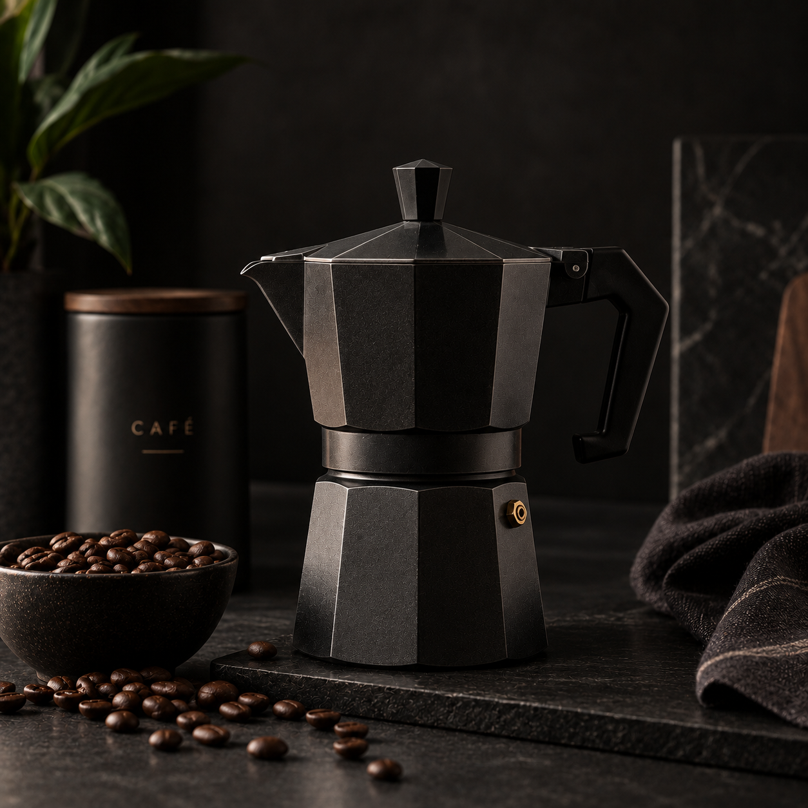
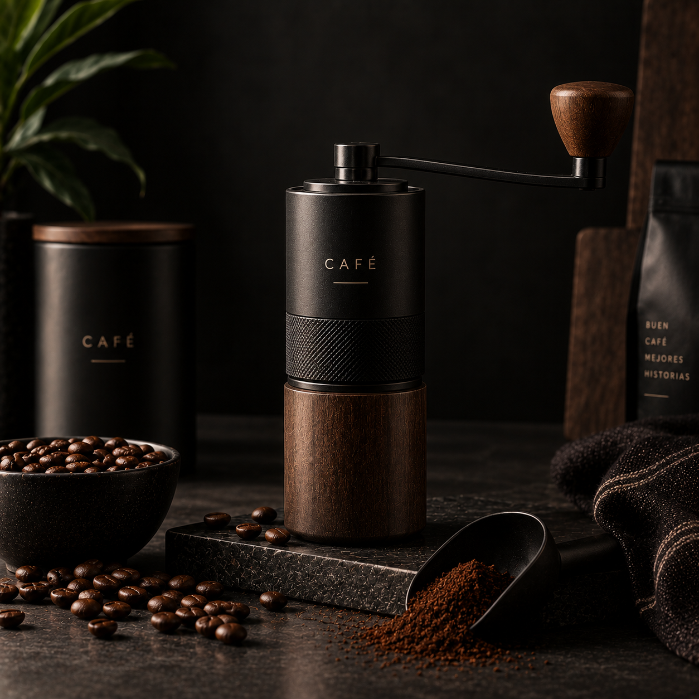

Café
Cafés de distintos orígenes y perfiles de sabor.
Ver cafésDescubre cafés, métodos de preparación y accesorios para disfrutar cada taza.
Ver productosCafés de distintos orígenes y perfiles de sabor.
Ver cafésPrensa francesa, moka, V60 y otros métodos.
Ver métodosMuele tus granos y prepara un café más fresco.
Ver molinillosTodo lo necesario para disfrutar tu café.
Ver accesorios
Café de origen colombiano con notas suaves y equilibradas.
$8.990
Ver producto
Método clásico para preparar café estilo espresso.
$16.990
Ver producto
Muele tus granos al momento de preparar tu café.
$19.990
Ver productoConoce nuestros productos y aprende diferentes formas de preparar una buena taza de café.
Visitar el blog